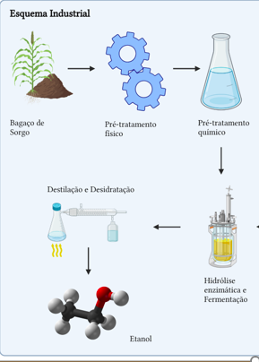
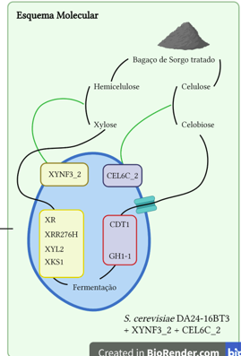

Título: Biotecnologia para Bioenergia: Produzindo Etanol de Segunda Geração com Sorgo e Engenharia Genética
Este trabalho foi desenvolvido para a matéria de Tecnologia Enzimática, onde criamos uma empresa fictícia para explorar a produção de bioetanol de segunda geração a partir do bagaço de sorgo. O objetivo era unir conceitos de biotecnologia e engenharia genética para criar um processo sustentável de produção de biocombustíveis.
O sorgo foi escolhido por ser uma cultura resistente, adaptada a climas quentes e secos, e por ter um alto teor de celulose e hemicelulose, componentes essenciais para a produção de bioetanol.
O bagaço de sorgo passa por um pré-tratamento físico e químico para desestruturar a lignina e expor a celulose e hemicelulose. Isso inclui moagem, secagem, extrusão e tratamento com vapor, preparando a biomassa para a hidrólise enzimática. 
A parte mais interessante do trabalho foi a engenharia genética de uma cepa da Saccharomyces cerevisiae. Utilizamos a tecnologia CRISPR/Cas9 para modificar geneticamente a levedura, inserindo genes que codificam enzimas capazes de quebrar a celulose e a hemicelulose (XYNF3_2, CEL6C_2) em açúcares fermentáveis.

As enzimas produzidas pela levedura geneticamente modificada, como a 1,4-beta-D-glucan cellobiohydrolase e a endo-1,4-beta-xilanase, atuam na quebra dos polissacarídeos, liberando açúcares simples que são fermentados em etanol.
O Trabalho do meu grupo ta disponivel no link: Trabalho de TE